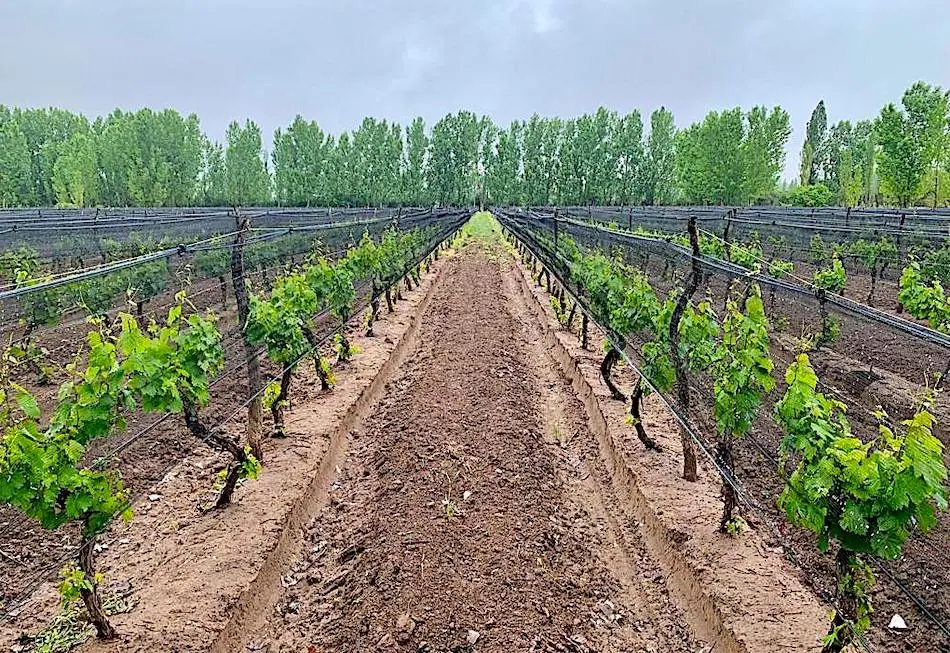
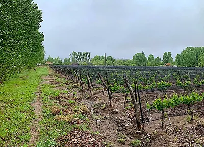
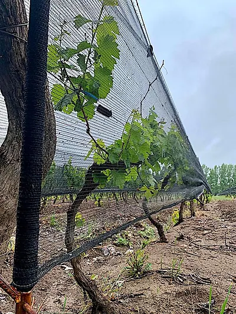

Cuadro Benegas, San Rafael, Argentina
Pequeño viñedo de Malbec sobre 5 ha (12 acres) en zona turística, con lugar para construir
¡Viñedo rentable!

Este viñedo de escala familiar está sobre 12,3 acres en Cuadro Benegas, una zona muy elegida por el turismo en San Rafael, Mendoza.
Un excelente casero vive en la propiedad lindera y le gustaría continuar con el nuevo dueño.
La uva se vendió año tras año a algunas de las mejores bodegas de la zona, entre ellas Bianchi, que exporta a todo el mundo.

El rinde anual llega hasta los 15.000 kilos, equivalentes a casi 15.000 botellas de vino. También existe la opción de que una bodega local elabore el vino y usted lo comercialice con marca propia, o de construir una bodega boutique en el lugar.
En 15 años el viñedo nunca dio pérdida. El dueño vive en Europa y lo administró a distancia sin inconvenientes.
El dueño indica que, en un buen año y descontados los gastos, la ganancia ronda los US$3.400.

La cosecha de marzo de 2025 fue de 10.540 kilos de uva Malbec.
La finca está cerca del complejo de vino y golf Algodón, de varios millones de dólares.
Se accede a la propiedad por buenos caminos desde dos lados. Hay electricidad, agua y servicios sobre el camino. El riego es bueno y suficiente.
El resto de las fotos
7 fotos más de esta propiedad. Toque cualquiera para verla en grande.

{kind=link}
{kind=link}
{kind=link}
{kind=link}
{kind=link}
{kind=link}
{kind=link}
{kind=link}
{kind=link}